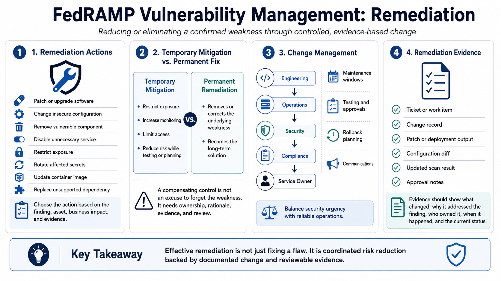

Remediation and Mitigation Workflows
Connecting to LMS... Progress: in progress

Narration
Remediation is the work of reducing or eliminating the weakness. It may involve patching, upgrading, changing configuration, removing a vulnerable component, disabling an unnecessary service, restricting exposure, rotating affected secrets, updating an image, or replacing an unsupported dependency. The correct action depends on the finding, the affected asset, business impact, and the evidence available.
Temporary mitigation is different from permanent remediation. A compensating control may reduce risk when a primary fix is delayed or not immediately feasible. For example, exposure may be restricted, monitoring may be increased, or access may be limited while an update is tested. A compensating control should not become an undocumented excuse to forget the weakness. It should have ownership, rationale, evidence, and review expectations.
Change management matters because remediation can affect availability, integrity, and customer commitments. Engineering, operations, security, compliance, and service owners often need to coordinate maintenance windows, rollback plans, testing, approvals, and communications. A rushed fix can create instability; an endlessly delayed fix can leave exposure open. The workflow should balance security urgency with reliable operations.
Remediation evidence should show what changed and why the change addressed the finding. Tickets, change records, patch outputs, deployment records, configuration diffs, updated scan results, and approval notes may all be relevant. The evidence should let a reviewer understand the issue, the action taken, the owner, the timing, and the current status without relying on informal memory.